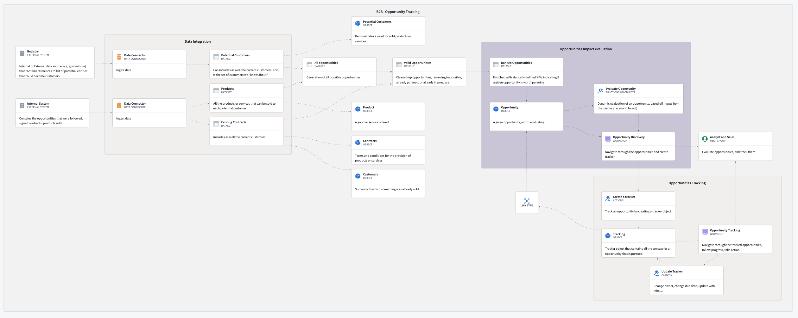
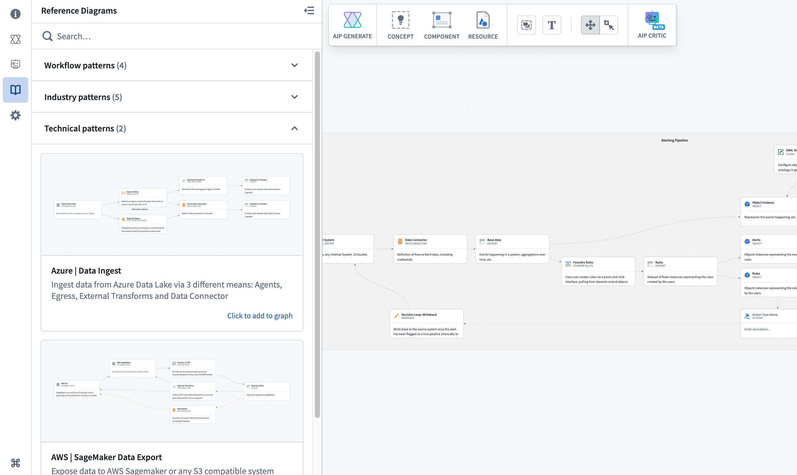

Solution Designer
Solution Designer is an interactive tool for creating architectural representations of solutions built using the Palantir platform. It includes representations for first-party and third-party integration points, links to platform resources, and on-demand access to documentation and best practices.

Solution Designer enables you to:
- Draw inspiration from a collection of industry and technical patterns.
- Create the solution architecture for your project with intuitive step-by-step guidance.
- Showcase and compare various architectural proposals to reach a consensus on build plans and strategies.
- Investigate new products and features to understand how they interact with the rest of the platform.
- Review and validate your architecture with AI-powered analysis and recommendations.
- Generate implementation plans using AI to accelerate solution development.

Use cases
Use Solution Designer to work through a variety of use cases, including the following:
- Platform discovery:
- Learn about platform components and how they interact with each other.
- Explore a curated library of industry and technical reference architectures that you can leverage for your specific use cases.
- Use AIP Architect to generate workflow plans based on your requirements and receive AI-guided implementation recommendations.
- Solution architecture development:
- Create diagrams from scratch by modifying reference patterns or importing existing resources.
- Add comments or descriptions to each node and link in your workflow or use-case solution.
- Build upon pre-existing solution diagrams within your organization.
- Organize complex architectures with hierarchical grouping and nested structures.
- Architecture review and validation:
- Use AIP Critic to review your diagram through an interactive AI conversation.
- Receive suggestions for improvements, alternative approaches, and best practices.
- Validate that your architecture aligns with Palantir platform capabilities and patterns.
- Export implementation plans as PDF documents for documentation and knowledge sharing.
- Project collaboration and knowledge transfer:
- Link architectural discussions to specific applications and code.
- Use solution diagrams for onboarding new team members, documenting ongoing or existing work, sharing project updates, and more.
- Export diagrams as images or JSON to share with stakeholders.
- Load Data Lineage graphs to visualize existing data flows and enhance them with architectural context.